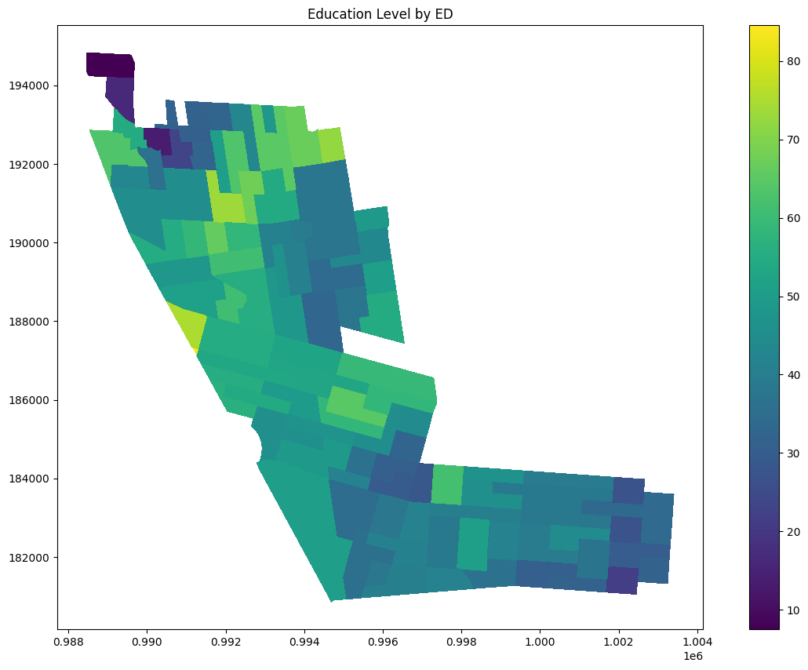
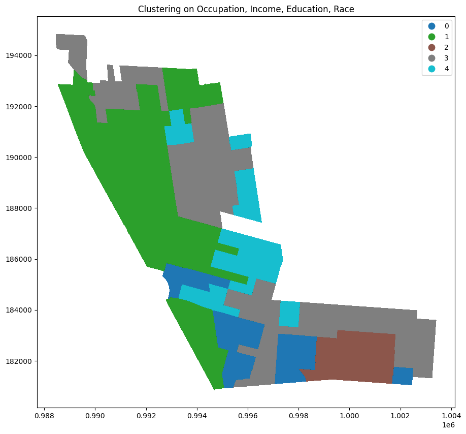
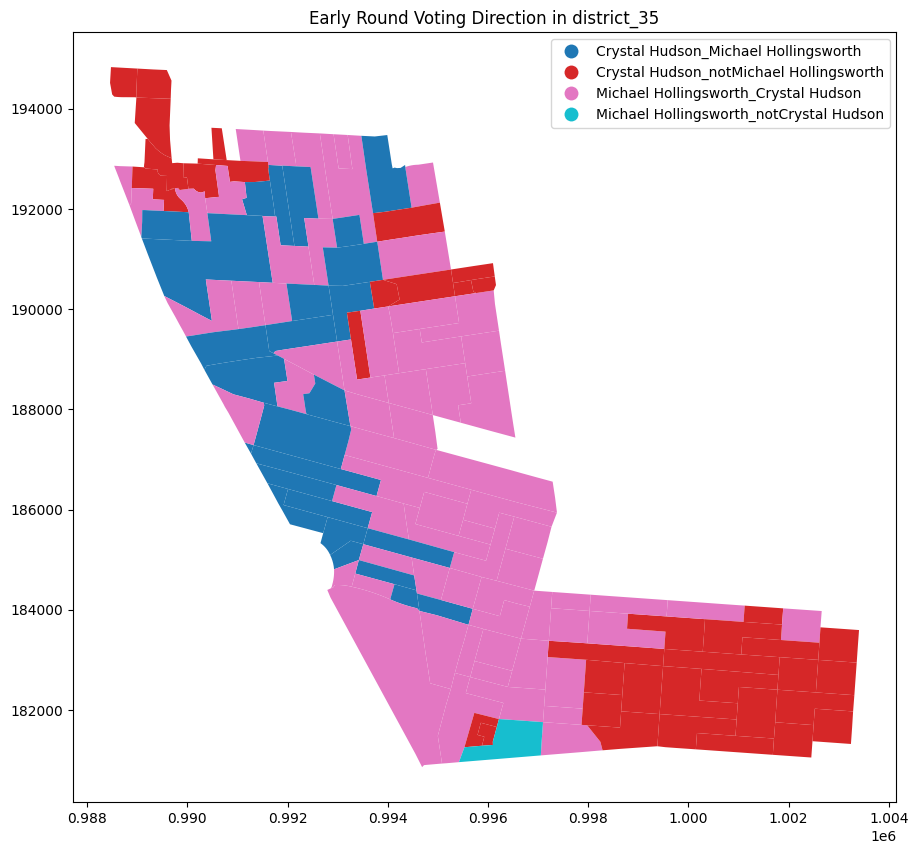

Code
import pandas as pd
import geopandas as gpd
import numpy as np
import matplotlib.pyplot as plt
from sklearn.cluster import KMeans
from sklearn.preprocessing import StandardScalerimport pandas as pd
import geopandas as gpd
import numpy as np
import matplotlib.pyplot as plt
from sklearn.cluster import KMeans
from sklearn.preprocessing import StandardScalerfrom utils import make_precinct_counts,make_demo_map,job_cols,race_cols,cols_to_keep,scale_and_cluster,make_edname,map_round_votesfrom shapely import wktdemo_cluster = pd.read_csv('../../chapter_two/data/occupation_demo_clusters_on_ed.csv')
d35 = pd.read_csv('../../cc_election_cleaning/all_rounds_results/district_35.csv')
ed_level = pd.read_csv('../../cc_election_cleaning/occupation_demo_data_feb21.csv')ed_shapefile = '../../chapter_two/data/nyed_21a/nyed.shp'
ed_gdf = gpd.read_file(ed_shapefile)District 35 lies in Central Brooklyn, running down Flatbush Avenue through Prospect Heights and then East through Crown Heights with Empire Boulevard as its southern border. The district falls in the top quintile of NYC Council districts in rate of higher education and in the second highest in both White and Black share of the population. Much of the Black population is of West Indian origin, it is in the top quintile West Indian born residents. It is also in the top quintile of white population born outside of New York State. It has a sizeable Hasidic population, Chabad-Lubavitch, though this population is partially split with the 4oth Council District. It has low Asian and Hispanic populations, and is in the middle of the road in terms of income, though this masks much diversity. The high rates of education and middle-income district wide numbers can be deceiving, with certain election districts (EDs) in the 35th among the poorest and least educated in the city. In the demographic clustering used in chapter two it was in cluster three, with districts such as Lincoln Restler’s and Shahana Hanif’s, that mix high-income, mainly white sections, with more racially diverse and mid- and lower-income sections. The district is heavily Democratic. The congressional district in which it sits, the New York 9th, is D+32 on the Cook Political Index. Joe Biden won the 35th by an 85% margin (though there was significant Trump support in the Hassidic section of the neighborhood).
Figure 1 below is a map of education level by election district in the council district. Of note are the generally higher levels of education north of Grand Army Plaza in the Prospect Heights area, with the exception of the top hook of the district which includes a NYCHA campus. Income is similarly much higher in the section of the neighborhood.
demo_map = make_demo_map(d35,ed_level)
demo_map.plot(column='cvap21bapp', cmap='viridis', legend=True, figsize=(15, 10))
plt.title("Education Level by ED")
plt.show()
def make_clustering_df(df,ed_df,cols_to_keep):
df = make_edname(df)
df = df.merge(ed_df, left_on='ed_name', right_on='ElectDist')
df = df[cols_to_keep]
return df
def scale_and_cluster(df,ed_df,cols_to_keep,n_clusters):
df = make_clustering_df(df,ed_df,cols_to_keep)
df = df.dropna()
features = df.drop(columns=['ElectDist'])
scaler = StandardScaler()
scaled_features = scaler.fit_transform(features)
kmeans = KMeans(n_clusters=n_clusters)
kmeans.fit(scaled_features)
df['cluster'] = kmeans.labels_
return dfclusters = scale_and_cluster(d35,ed_level,cols_to_keep,5)
df_gdf = clusters.merge(ed_gdf, on='ElectDist', how='left')
df_gdf = gpd.GeoDataFrame(df_gdf)
df_gdf['cluster'] = df_gdf['cluster'].astype('category')
df_gdf.plot(column='cluster', cmap='tab10', legend=True, figsize=(15, 10))
plt.title("Clustering on Occupation, Income, Education, Race")
plt.show()c:\Users\samtg\AppData\Local\Programs\Python\Python311\Lib\site-packages\sklearn\cluster\_kmeans.py:1412: FutureWarning: The default value of `n_init` will change from 10 to 'auto' in 1.4. Set the value of `n_init` explicitly to suppress the warning
super()._check_params_vs_input(X, default_n_init=10)
The two front runners in the 2021 Council race were Crystal Hudson and Michael Hollingsworth. Hudson had previously worked for the outgoing member Laurie Cuombo, and therefore had connections the county party and city Democratic establishment, whereas Holligsworth, a graphic designer and organizer, proudly ran on his lack of such connections. Despite these differences, both candidate vied for a DSA endorsement, signaling an extensive ideological overlap. Indeed, in analyzing their interviews, tweets, and campaign material, it is difficult to find significant daylight between the two on firm policy issues. Indeed, much media commentary noted two seemingly contradictory aspects of the race, that 1: it set up a contest between two rival sections of the city’s progressive left, but that 2: the two candidates seemed to agree on most substantive policy issues [@Hamm 2021; @Barkan 2021; @Smith 2021; @Salazar 2021]. Both agreed that portions of the NYPD’s budget should be reallocated to other uses, both thought the city’s rezoning process needed to be retooled to build more affordable housing, especially in wealthy neighborhoods, both were pro union and pro public school. One commentator suggested that there was some daylight between the candidates on real estate, with Hollingsworth suggesting a complete moratorium on upzonings, while Hudson argued that upzonings should continue, but in wealthier neighborhoods and with more affordable housing. Case in point, she supports the SoHo/NoHo rezoning while Hollingsworth does not (Oder 2021). Similarly, Hollingsworth has suggested he would continue to support the practice of local member deference, while Hudson would not [@Oder 2021]. Though this gap on real estate and development is not enormous, it may explain, in part, some of the union PAC support for Hudson as well as the Stephen Ross mailers mentioned below.
Because of the symmetry in ideology and the asymmetry in endorsements, the 35th helps illuminate some particularly interesting dynamic in NYC progressive politics. How are DSA endorsements earned and how much power do they wield, especially against Brooklyn big hitters like Hakeem Jeffries? During her term in office Laurie Cuombo, while taking heat for her relationship with real estate developers, reffered to the DSA as being the political wing of white gentrification. Does that analysis hold out in the 3fth? What groups do these endorsements appeal to? Who might they discourage? At the root of these questions are larger ones about political branding as well as about how national politics map onto local politics.
Table 1 shows the flow of votes in the fist two rounds of voting, ranked by number of ballots. The top two options where overwhelmingly one of the top two followed by the other. Nonetheless there are many ballots who chose Hudson and then someone else second, and fewer though still a substantial amount that chose HOllingsworth and not Hudson.
d35.groupby('district_35_choice_1')['district_35_choice_2'].value_counts().reset_index(name='count').sort_values('count', ascending=False).head(10)| district_35_choice_1 | district_35_choice_2 | count | |
|---|---|---|---|
| 34 | Michael Hollingsworth | Crystal Hudson | 5900 |
| 0 | Crystal Hudson | Michael Hollingsworth | 5068 |
| 1 | Crystal Hudson | Hector Robertson | 1842 |
| 2 | Crystal Hudson | Renee T. Collymore | 1772 |
| 35 | Michael Hollingsworth | Renee T. Collymore | 1184 |
| 52 | Renee T. Collymore | Crystal Hudson | 1038 |
| 53 | Renee T. Collymore | Michael Hollingsworth | 832 |
| 3 | Crystal Hudson | Curtis M. Harris | 574 |
| 4 | Crystal Hudson | Deirdre M. Levy | 516 |
| 36 | Michael Hollingsworth | Curtis M. Harris | 493 |
Figure 1 shows how these voting flows break geographically. The largest section of Hudson voters who did not list Hollingsworth next live in the primarily Hasidic part of the neighborhood. Holingsworth had tremendous trouble with the community, which is discussed below. Communities that voted Hudson and then Holingswroth are clustered in the wealthier area along Flatbush avenue.
map_round_votes(d35,ed_gdf,'district_35','Crystal Hudson','Michael Hollingsworth')